1.在 Photoshop 中，将图像保存为PNG 格式，可以保留图层信息，方便下次继续编辑。（ ）
PNG 格式是位图格式，保存时会合并所有图层，无法保留图层信息；只有 Photoshop 专属的 PSD 格式才能完整保留图层、通道、样式等编辑信息，方便后续修改。
2.在 Photoshop 中，下图所示的图像中没有文字图层。（ ）
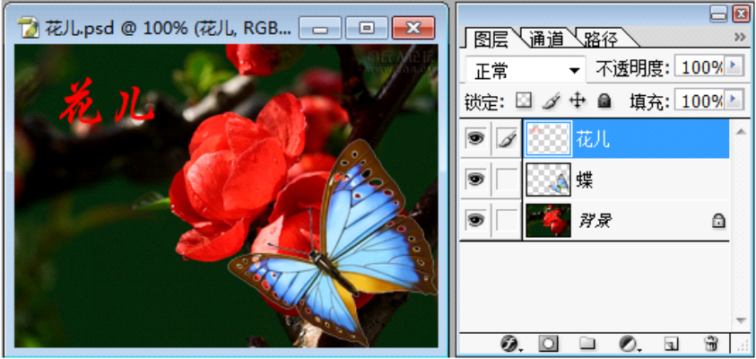
图层面板中没有出现文字图标，因此该图像中没有文字图层。
3.在 Photoshop 中，将下图的图像作品存储为BMP 格式，保存后的图片文件含有三个图层。（ ）
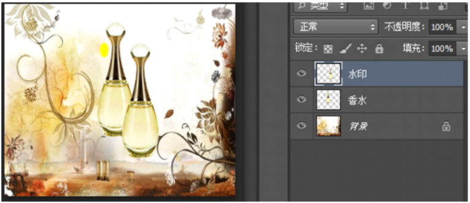
BMP 格式不支持保存图层，保存后会合并所有图层，无法保留三个图层。
4.在 Photoshop 中，图层窗口如下图所示，当前编辑的图层是 “米老鼠”。（ ）
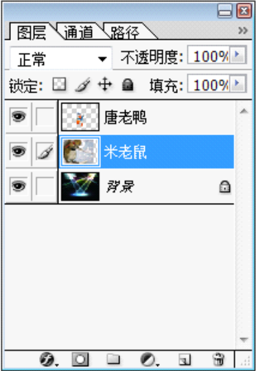
图层面板中“米老鼠”图层为高亮选中状态，是当前可编辑图层。
5.在 Photoshop 中，通过调整图像大小，可以将左图变成右图。（ ）
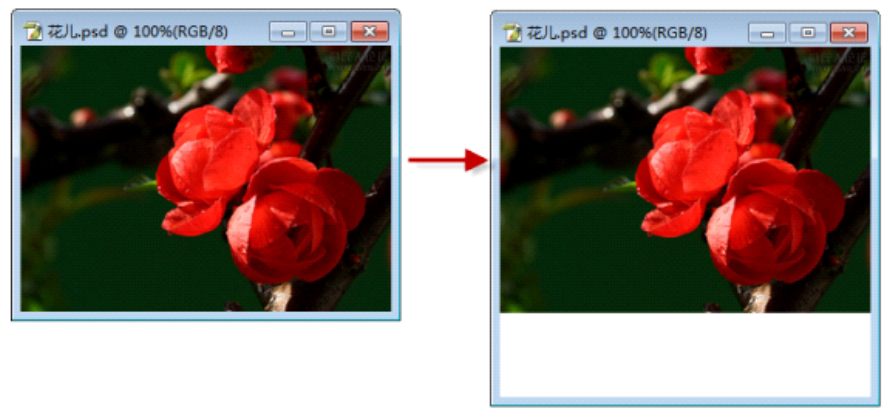
调整“图像大小”会改变整个图像的尺寸和分辨率，而右图是在画布底部增加了空白区域，这是通过调整画布大小实现的，而非调整图像大小。
6.某医院将开展儿童健康义诊活动，为了更直观、生动地宣传活动内容，可以通过图片合成技术来制作海报，表达活动的主题和目的。（ ）
图片合成技术可以将多种素材组合成美观、直观的海报，适合用于宣传活动主题与目的。
7.在 Photoshop 中使用橡皮擦工具，不管在哪个图层，擦除的位置会变成前景色。（ ）
当橡皮擦工具作用于普通图层时，擦除的位置会变为透明，显示下方图层的内容。只有当橡皮擦工具作用于背景图层时，擦除的位置才会填充为背景色，而非前景色。
8.在 Photoshop 中，对图像执行了 “自由变换” 命令后，按住 “Shift” 键，拖动对角线可以随意改变图像的宽高比例。（ ）
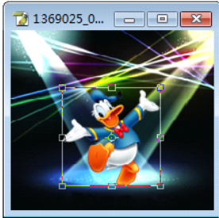
在 Photoshop 的 “自由变换” 模式下：按住 Shift 键并拖动对角线，是为了锁定图像的宽高比例，进行等比例缩放，防止图像变形。不按任何键直接拖动对角线，才是随意改变宽高比例。
9.如图所示是使用 Photoshop 处理图片时的图层调板截图，可知包含了 1 个文字图层，4 个图像图层，1 个隐藏图层。（ ）
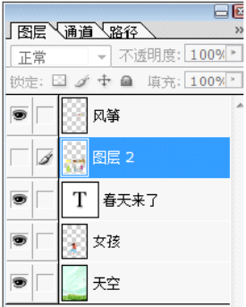
10.在 Photoshop 图层调板中，当前编辑的图层会出现标志。（ ）
当前编辑的图层会以高亮背景显示，画笔标志代表的是图层已锁定透明像素，并非当前编辑图层。
11.在 Photoshop 中，将含有多个图层的文件保存为 PSD 格式后，所有图层将合并为一个图层。（ ）
PSD 是 Photoshop 专用格式，会完整保留所有图层、样式等信息，不会合并图层。
12.判断：在 Photoshop 中，图层面板如下所示，此时我们可以将 “唐老鸭” 图层栅格化处理。（ ）
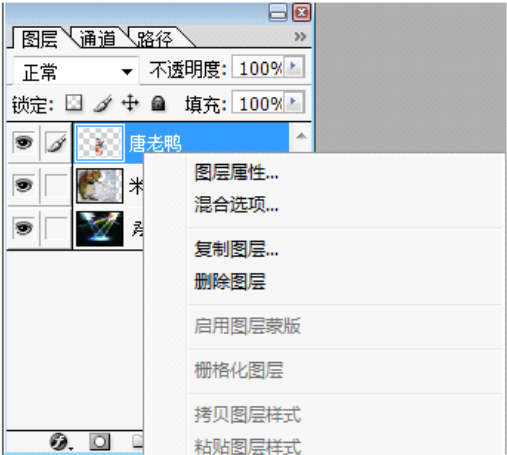
从菜单中的灰色可以判断无法执行栅格化操作。
13.在 Photoshop 中，可以通过 “图像”→“调整”→“色相 / 饱和度” 操作将左图的图像调整为右图图像。（ ）
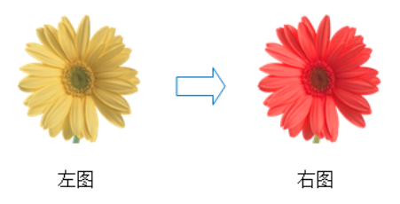
色相/饱和度命令可以调整图像的色彩与鲜艳程度，能够实现题目中的颜色变化效果。
14.要将图片文件 “风景.psd” 另存为 “风景.jpg”，可以通过直接修改文件后缀名的方法来实现。（ ）
PSD 是 Photoshop 专用格式，直接改后缀无法真正转换格式，会导致文件损坏或无法打开，必须在软件中用“存储为”或“导出”功能转换为 JPG。
15.在Photoshop中，可以通过“旋转画布”中的“垂直翻转”命令将左图图像调整为右图图像效果。（ ）
左图到右图是飞机左右镜像，这是“水平翻转”的效果；“垂直翻转”会让图像上下颠倒，无法得到右图效果。
16.在Photoshop图层调板中，单击箭头所指的按钮可以新建一个空白图层。（ ）
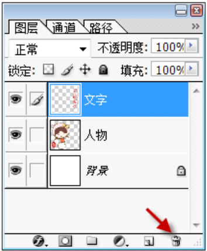
箭头所指的按钮是“删除图层”按钮，用于删除选中的图层；新建空白图层应点击其左侧的“创建新图层”按钮。
17.在Photoshop图层调板中，当前编辑的图层是文字图层。（ ）
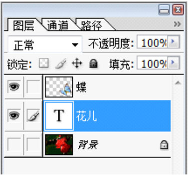
图中“花儿”图层为高亮选中状态，且带有“T”图标，这是文字图层的标识，因此当前编辑的图层是文字图层。
18.在Photoshop中，单击工具箱中
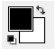
按钮上的
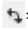
箭头可以切换前景色和背景色。（ ）
在Photoshop工具箱中，前景色和背景色按钮右上角的双向箭头，单击后即可交换前景色和背景色。
19.在Photoshop中，“小鸭”图层中红色箭头所指的空白区域的填充色是透明色。（ ）
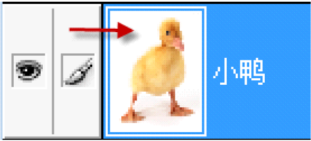
从图中可以看出，红色箭头所指的空白区域的填充色是白色。